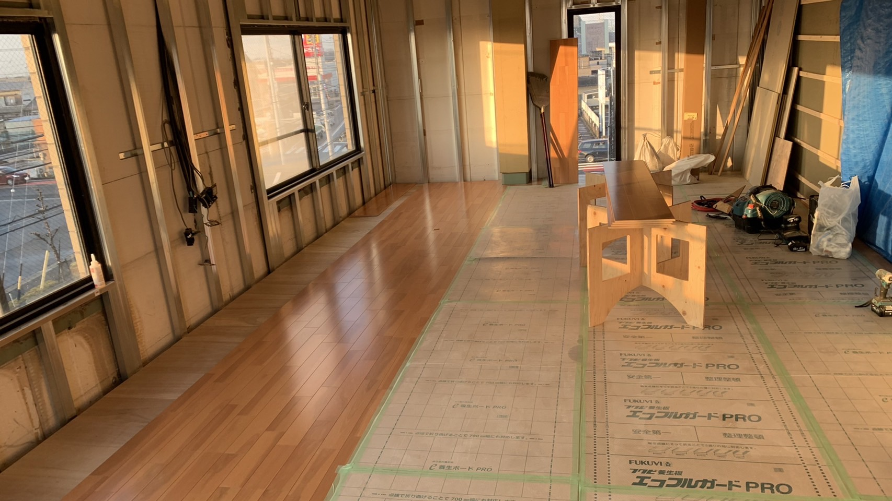
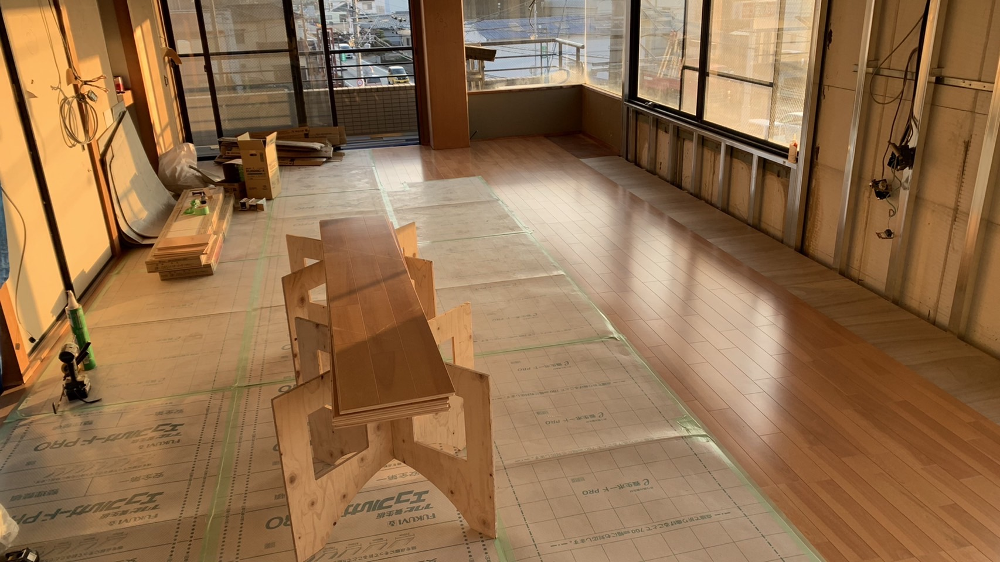
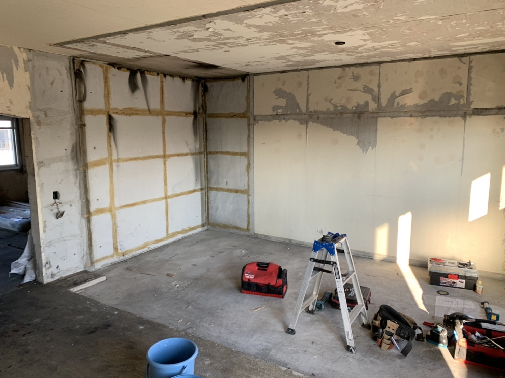
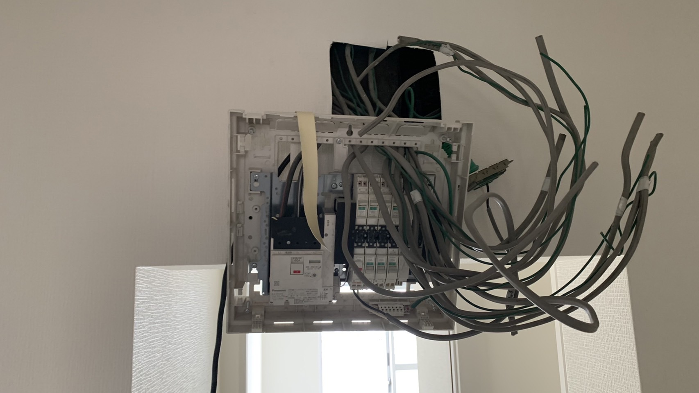

内装施工職人
合同会社便利屋555 （2013年3月～2014年10月）
合同会社アイ・エム・ダブル （2018年9月～2022年9月）
職人では、新しい作業を一人で行う機会が多く、その都度「自分で調べて、やってみて、調整して」とトライ＆エラーを繰り返しながらスキルを身に付け、作業の質を高めてきました。
- 業務内容
- 中古住宅リフォーム(解体/造作(軽天工事/木工工事/ボード工事)/電気配線/水道配管/フローリング施工/入居前クリーニング/外構工事(板金/コンクリート・モルタル工事/ウッドデッキ製作/サッシ取り付け/外壁塗装)/エアコン・便器・キッチン・ユニットバス等の取付・設置/溶接)
- 現地調査(材料のひろいだし/状態確認/建材の仕入れ)/顧客への営業提案(見積・契約書の作成)/消防申請書類の作成・申請/新人教育・OJT
- 仕事への取組み
- 先輩職人さんと作業を共にし、「1つ1つの小さなクオリティー」に拘ること、作業場はきれいに保ち整理整頓を心掛ける職人さんがいいものをつくる傾向があると感じたため、自身も前述の事柄を意識して業務を行っていました。
- 一緒に仕事をする方に対して笑顔で接し、日常の雑談などのコミュニケーションを大切にしていました。目上の方には可愛がってもらえたと自負しています。
作業風景
-

フローリング施工
-
現場は整理整頓を欠かさずきれいな状態にしていました。
-

施工したフローリングは傷を付けないように専用の養生材を使っています。
-

マンションの一部屋くらいでしたら一人で解体作業を行います。
-

資格が必要の範囲の配線作業は一人で行っていました。